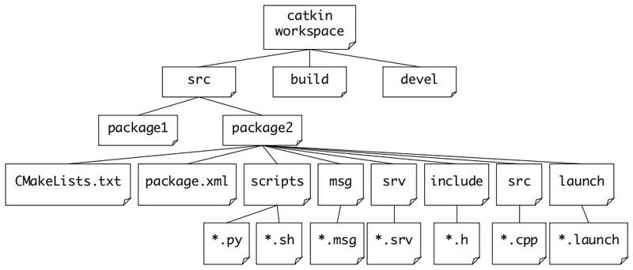

Day 2, 23 - 4 - 2020
Overlay
Overlay in Spanish means "cubrir"
Overlaying refers to building and using a ROS package from source on top of an existing version of that same package. In this way your new or modified version of the package "overlays" the installed one.
rospack
Code is spread across many ROS packages. Navigating with command-line tools such as ls and cd can be very tedious which is why ROS provides tools to help you.
"rospack find roscpp" tell me the path where the package roscpp is located
roscd
roscd is part of the rosbash suite. It allows you to change directory (cd) directly to a package or a stack.
"roscd roscpp" change working directory to the place where the package roscpp is located and doesnt matter where your are at that moment (i mean which is your current working directory at that moment)
rosls
rosls is part of the rosbash suite. It allows you to ls directly in a package by name rather than by absolute path.
so instead of needing to say the specific path where a package is, you just need to say its name and doesnt matter which is your current working directory at the moment
rosls roscpp_tutorials
package (catkin package)
For a package to be considered a catkin package it must meet a few requirements:
- The package must contain a catkin compliant package.xml file. (provides meta information about the package)
- The package must contain a CMakeLists.txt which uses catkin.
- Each package must have its own folder. This means no nested packages nor multiple packages sharing the same directory.
IMPORTANT to create a package you need to be in the SOURCE SPACE workspace directory!!
"cd ~/catkin_ws/src"
